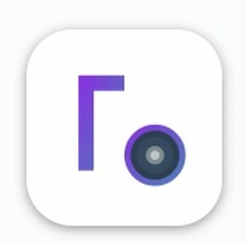
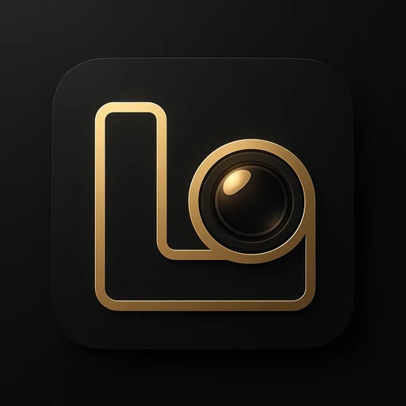
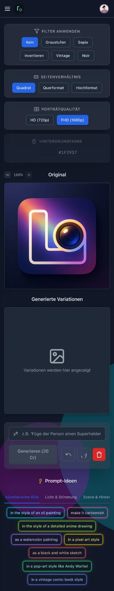

01 — CREATE
AI Photo Studio
Bearbeite Fotos mit Texteingaben, entdecke kreative Looks und entwickle neue Bildideen.
Aus Gedanken werden Bilder. Aus Bildern werden Geschichten. Lumina AI vereint kreative Fotobearbeitung und KI-Videogenerierung in einem Studio.


4 Original-Icons
Ein kreatives Universum. Dein Style.

01 / WHAT'S POSSIBLE
Von der ersten Idee bis zur nächsten visuellen Story – die Werkzeuge an einem Ort.
Bearbeite Fotos mit Texteingaben, entdecke kreative Looks und entwickle neue Bildideen.
Verwandle visuelle Ideen in bewegte Szenen – der kreative Weg von Bild zu Video.
Filter, Seitenverhältnisse und Ausgabeoptionen für deinen individuellen Bildlook.
Individuelle App-Symbole, Hintergrundeffekte und Light-/Dark-Ansichten.
02 / INSIDE LUMINA
Ein aufgeräumter Editor mit smarten Tools, echten Style-Optionen und intuitiven Workflows. Die Vorschau zeigt aktuelle Oberflächen aus Lumina AI.
Filter, Bildformat, Qualität, Prompt-Eingabe und kreative Inspiration direkt im Editor.
Ein Platz für dein Profil, Favoriten und deine Übersicht zu Generierungen und Credits.
Wähle Hintergründe, Sprachen und App-Icons passend zu deinem Look.
03 / SIGNATURE LOOKS
Vier Original-Symbole, sechs saisonale Sonderdesigns und fünf passende Farbwelten für diese Website. Wechsel deinen Look mit nur einem Klick.
CURATED FOR YOUR STYLE
Lebendige Lichtreflexe, violette Tiefen und ein cineastischer Charakter.
Tipp: Das Design der Landingpage kannst du oben rechts wechseln.04 / SEASONAL COLLECTIONS
Sechs saisonale Lumina-Icons und passende kreative Themenwelten – von Halloween bis Weihnachten. Die Auswahl ist eine Vorschau auf mögliche Kollektionen.
Mystische Nacht, violette Schatten & warmes Kürbislicht.
Die saisonalen Icon-Motive sind echte Designentwürfe. Verfügbarkeit einzelner In-App-Tools hängt von der veröffentlichten App-Version ab.
05 / CREATIVE WORKFLOW
Outfits, Lichtstimmung und Bildstile können als kreative Idee zusammenwirken. Probiere hier eine Beispielkombination aus – ohne Bild-Upload und ohne KI-Verarbeitung.
Interaktive Marketing-Demo: Sie stellt keine Verbindung zur KI-API her und verbraucht keine Credits.
Elegant & Luxury · Golden Hour · Fashion Editorial
06 / THE FIRST LOOK
Erste Promo-Eindrücke aus der Entwicklung – als Dark- und Light-Version.
07 / GOOD TO KNOW
Die wichtigsten Fragen rund um das Lumina AI Projekt.
Lumina AI ist ein kreatives App-Projekt für KI-gestützte Fotobearbeitung und Videoerstellung. Die gezeigten Screenshots stammen aus einer vorhandenen App-Vorschau.
Diese Website präsentiert das Projekt. Ein bestätigter Download-Link oder Veröffentlichungstermin liegt hier noch nicht vor. Informationen kannst du per E-Mail erfragen.
Ja. Die Original-Icons und sechs saisonale Entwürfe findest du im Designbereich. Für diese Website kannst du zusätzlich zwischen fünf Farbwelten wechseln. Welche Varianten in der installierten App erscheinen, hängt von der jeweiligen Version ab.
Preise und mögliche Credit-Pakete sind noch nicht offiziell angegeben. Vor einer Veröffentlichung werden die Konditionen transparent ausgewiesen.
LET YOUR IDEAS SHINE
Ein neues kreatives Kapitel beginnt. Bleib mit Lumina AI in Verbindung.
Launch-Updates anfragen Kontakt per E-Mail · Kein Newsletter-Abo oder Tracking auf dieser Seite.